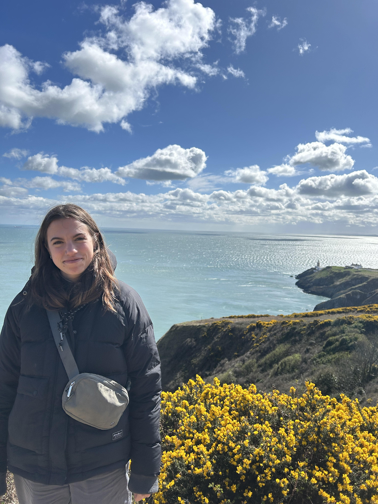

About Me
My name is Sophia Lotz, and I am a second-semester bachelor's student at University College Utrecht studying Earth Sciences and Chemistry. This website is a portfolio of my work done in GIS for a lab.
GIS, or Geographic Information Systems, are the tools that can be used to analyze geographic data. In this class, this mostly includes open-source data, with one assignment using data collected by the class. This differs from Geographic Information Science, which is the study of the technology and techniques used for GIS. Most of the maps contained on this website are choropleth maps, with one density map (heat map) under Vector Data. There is a mix of raster maps (using pixels) and vector maps (using geometry), in order to explain different phenomena in the natural world. An example of a way in which this technology can be used is monitoring the change of a river path over time. In order to properly analyze this, there needs to be a way to perform pattern recognition on a time scale, something GIS is made to do. Deforestation, carbon offset planning, urban city design, and land use classification are other examples of ways GIS can be used to solve complex problems.
Each subsection includes specific maps and the techniques used to create them, as well as specific definitions needed for the map, problems that occurred while running the analyses, and solutions I came up with to attempt to mitigate those problems. A variety of software was used for the duration of this course, including: ArcGIS Pro, QGIS, Google Earth Engine, and ArcGIS Online (Esri).